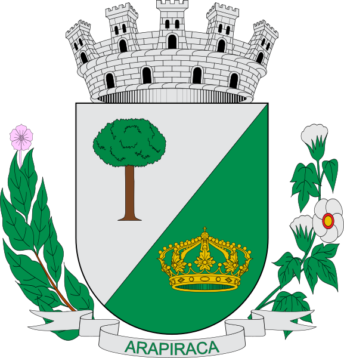

Prefeitura de Arapiraca começa revitalização asfáltica nas ruas da cidade
ASA segue preparação para a Série C; Com sinusite, Leandro Kivel é poupado
Arapiraca é um município brasileiro no interior do estado de Alagoas. Pertencente à Mesorregião do Agreste Alagoano, localiza-se a oeste da capital do estado, distando desta cerca de 128 km. Sua população foi contada em 2015 pelo IBGE em 231.053 habitantes, sendo assim o segundo mais populoso do estado de Alagoas e o primeiro de sua microrregião. Está a aproximadamente 1.390 km de Brasília, a capital federal. A cidade localiza-se exatamente no centro do estado, o que a torna uma importante rota para as mais variadas áreas das cidades circunvizinhas e demais cidades. Sua área é de 367,5 km², sendo que 8,6874 km² estão em perímetro urbano.
Vista aérea da cidade
Brasão de Arapiraca